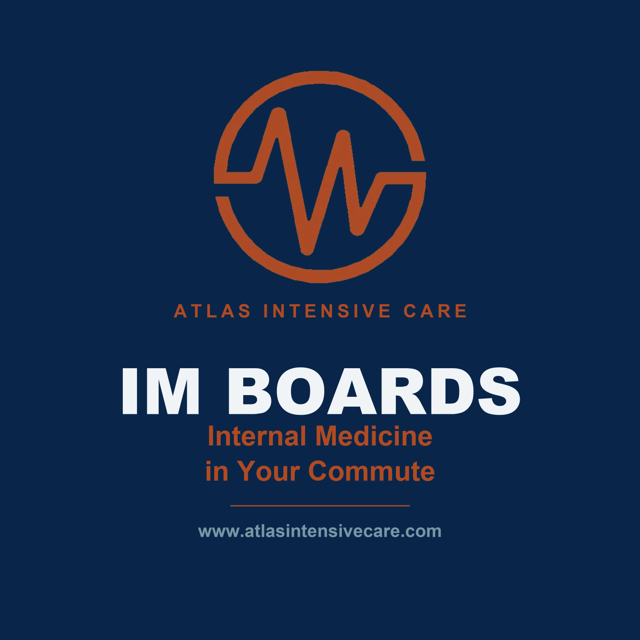

A medical podcast we produce
Internal Medicine in Your Commute
Internal medicine has more moving parts than anyone can hold in their head at once. Atlas IM Boards is here to help you carry them.
Each short episode takes one high-yield concept — the kind that shows up on the boards and in your clinic the same week — and explains it clearly enough to remember on the drive to work. No filler, no forty-minute detours. Just the core ideas, made memorable.
Whether you're revising for the exam or sharpening what you already use every day, these are the concepts worth keeping close. Free to listen on Spotify and Apple Podcasts.
Browse every episode right here — or follow on Spotify and Apple Podcasts above to discover more from Atlas IM Boards as new episodes drop.